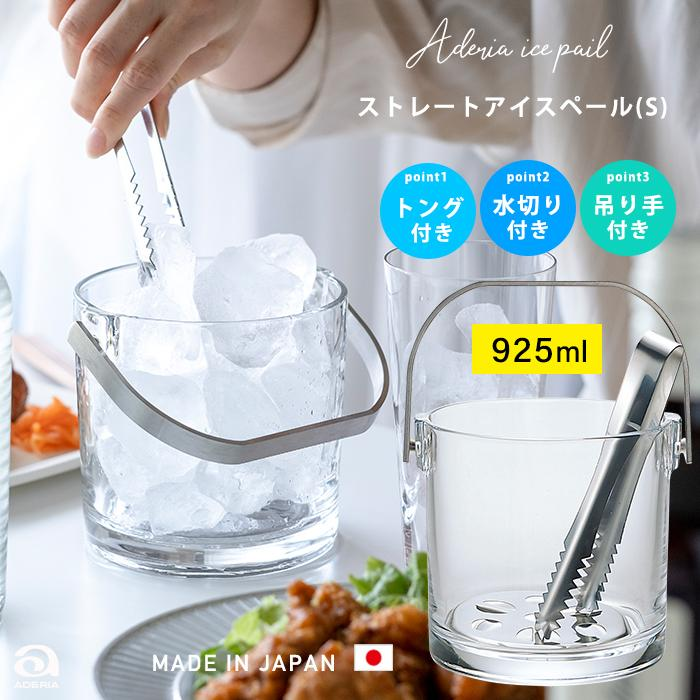
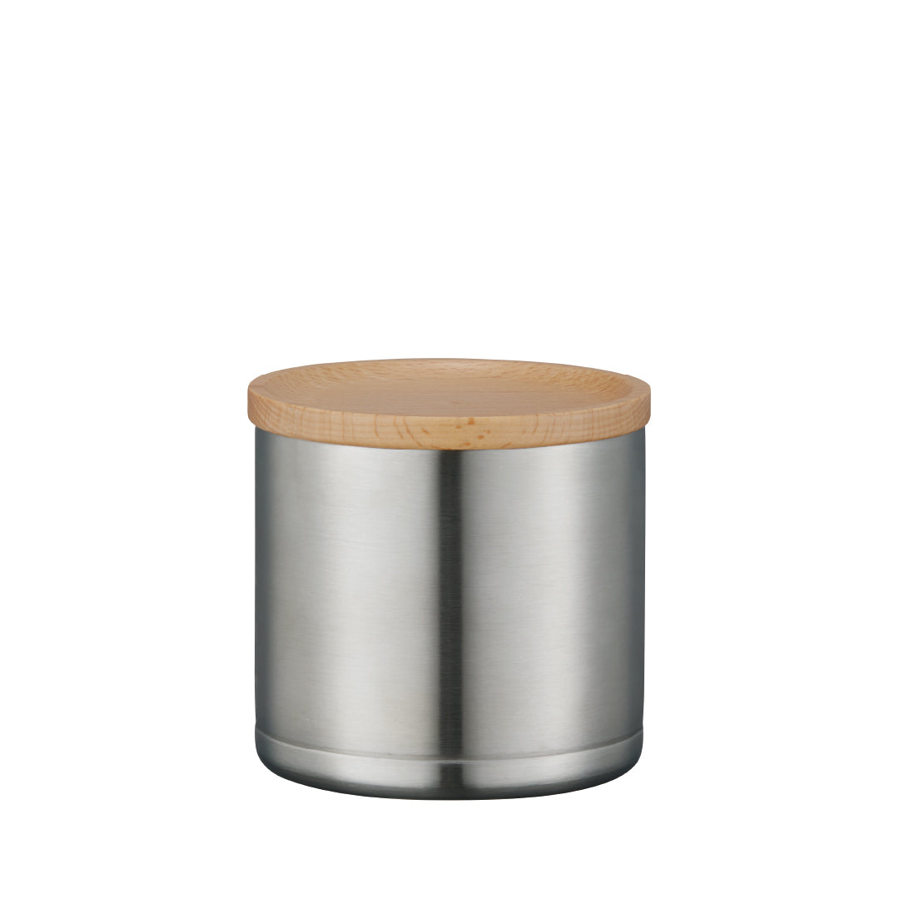
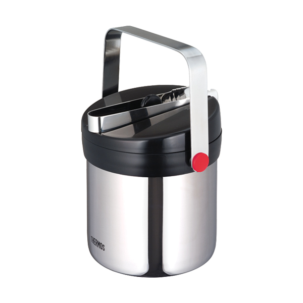

ガラスの透明感とバーらしさで選びたい人向け。日本製・最安。
550mlの小ささ、真空二重断熱、木製フタが小皿代わり。一人晩酌に向く。
1.3Lの大容量と2時間保冷。2人以上・長めの晩酌に向く。
価格差2.3倍。違いは保冷性能と容量
実測評価ではなく、2026年7月17日時点のメーカー公開仕様と確認時点の販売価格に基づく編集評価です。
| 比較項目 |
透明感重視
 ADERIAストレートアイスペール(S) M-6801
|
総合推奨
 ピーコックミニアイスペール IBC-55
|
容量・保冷重視
 サーモス真空断熱アイスペール JIN-1300
|
|---|---|---|---|
| 参考価格 | 1,697円 | 2,482円 | 3,933円 |
| 保冷・結露 | △ 保冷機構なし ガラスのため室温の影響を受け、結露が出やすい | ◎ 真空二重断熱 結露しにくく、氷が長持ちする | ◎ 真空断熱・公称2時間10℃以下 結露しにくく、長時間保冷できる |
| 容量 | ○ 約925ml 一人で氷とウイスキーを並べやすい大きさ | ◎ 0.55L（550ml） 一人晩酌に使いやすいコンパクトサイズ | ○ 1.3L 2人以上や氷を多く使う晩酌に向く |
| 取り回し | ○ ガラス製・日本製 卓上での安定感があり、食卓になじむ透明感 | ◎ 約300g・108×108×105mm 軽量でコンパクト、一人の卓上で使いやすい | △ 約600g・155×135×165mm 氷込みでは重く、単身卓上では存在感が大きい |
| 付属品・素材 | ◎ ソーダガラス・日本製 トング・水切り付き。急激な温度変化は避けること | ◎ ステンレス真空二重 木製フタ（小皿兼用）・トング付き | ○ ステンレス真空断熱 フタ・水切り・トング付き。容量に見合った装備 |
| 向く使い方 | ○ 最安でバーの雰囲気を出したい人 ガラスの透明感と日本製品質を優先するなら | ◎ 平日の一人晩酌 保冷・コンパクトさ・木製フタのバランスが向く | ○ 2人以上または長時間の晩酌 1.3L大容量と公称2時間保冷が向く |
| 商品を見る | ADERIAをAmazonで見る | ピーコックをAmazonで見る | サーモスをAmazonで見る |
※価格は2026年7月17日時点の確認価格です。Amazonでは在庫・出品者・セールにより変動します※保冷効力はメーカー公称値です。実際の効果は室温・氷の量・開閉頻度により変わります※ADERIA M-6801はソーダガラス製のため、急激な温度変化（熱湯など）は避けてください※メーカー公式ページまたはメーカー直営店で公開された商品画像を使用しています
結論：平日1人ならピーコック。目的で選び分ける
ADERIA。ガラスの透明感と日本製の品質を1,697円で試せます。
ピーコック IBC-55。真空二重断熱の保冷と550mlのコンパクトさを評価しました。
サーモス JIN-1300。1.3Lの大容量と2時間保冷を優先する人向けです。